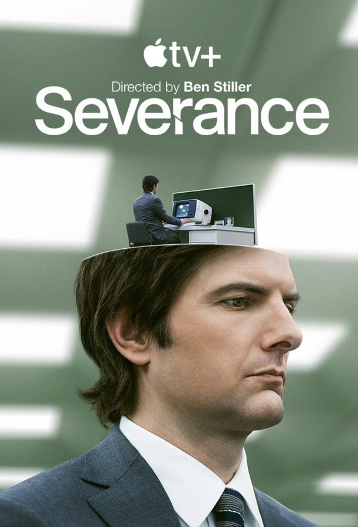
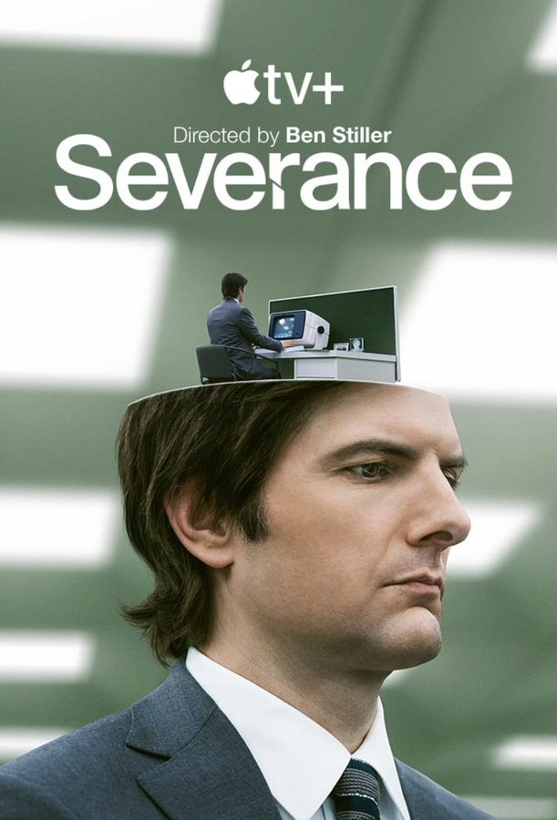

Top 5 filmes: Into the wild, Star wars rogue one, Akira, O silencio dos inocentes


Top 5 serie: vikings, peaky blinders, ruptura, arcane, game of thrones

 



Top 5 animes: One piece, HunterXhunter, Cowboy bebop, samurai champloo, cyberpunk edgruners.